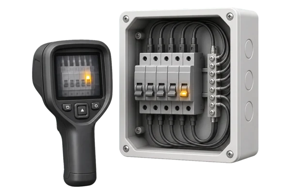

Объект и оборудование
Нужно описать, где и когда появляется нагрев, какие потребители работают и происходят ли отключения или запах.
 Elecround
Elecround
Ищем причины нагрева электрощита: ослабленные контакты, перегрузку линий, повреждения и ошибки коммутации.
Ищем причины нагрева электрощита: ослабленные контакты, перегрузку линий, повреждения и ошибки коммутации.
Проверяем согласованные щиты, аппараты, клеммы, шины, проводники и нагрузку проблемных групп. Определяем вероятную причину перегрева и предлагаем приоритетные меры: протяжку, перераспределение или замену элементов.
Исходные данные помогают согласовать объем, условия и ожидаемый результат до выезда специалистов.
Нужно описать, где и когда появляется нагрев, какие потребители работают и происходят ли отключения или запах.
Проверяем согласованные щиты, аппараты, клеммы, шины, проводники и нагрузку проблемных групп.
Определяем вероятную причину перегрева и предлагаем приоритетные меры: протяжку, перераспределение или замену элементов.
Последовательность уточняем по объекту, технической задаче и условиям безопасного доступа.
Нужно описать, где и когда появляется нагрев, какие потребители работают и происходят ли отключения или запах.
Часть диагностики проводится под нагрузкой, а протяжка и ремонт требуют безопасного отключения участка.
Проверяем согласованные щиты, аппараты, клеммы, шины, проводники и нагрузку проблемных групп.
Выполняем осмотр, тепловизионный контроль, измерение нагрузки и локальную проверку подозрительных соединений.
Сопоставляем полученные данные с задачей проверки и фактическим состоянием объекта.
Определяем вероятную причину перегрева и предлагаем приоритетные меры: протяжку, перераспределение или замену элементов.
Подход зависит от типа объекта, состава электроустановки и режима доступа. Учитываем контакты, автоматы и токоведущие части; результат — причина нагрева и рекомендации.

Выполняем диагностику перегрева электрощита в квартирах, апартаментах и частных домах с учётом условий объекта.
Уточняем состояние оборудования. До выезда уточняем состояние оборудования, известные неисправности, доступ к щитам и допустимые отключения.
Цена зависит от объема, количества точек проверки, состояния электроустановки, доступа и требуемых документов.
Посмотрите ориентиры стоимости обслуживания щитов, диагностики и профилактических работ.
Узнать большеРассчитайте примерную стоимость обслуживания по количеству щитов, групп и задач на объекте.
Узнать большеСмету согласуем по фактическому составу работ и условиям конкретного объекта.
Фиксируем оборудование, щиты, режим работы, симптомы и ограничения по доступу.
Разделяем осмотр, профилактику, диагностику, материалы и возможные отключения.
Проводим согласованные работы и фиксируем состояние электроустановки.
Сообщаем о выполненных действиях, замечаниях и приоритетах дальнейших работ.
Ищем причины нагрева электрощита: ослабленные контакты, перегрузку линий, повреждения и ошибки коммутации.
Нужно описать, где и когда появляется нагрев, какие потребители работают и происходят ли отключения или запах.
Определяем вероятную причину перегрева и предлагаем приоритетные меры: протяжку, перераспределение или замену элементов.